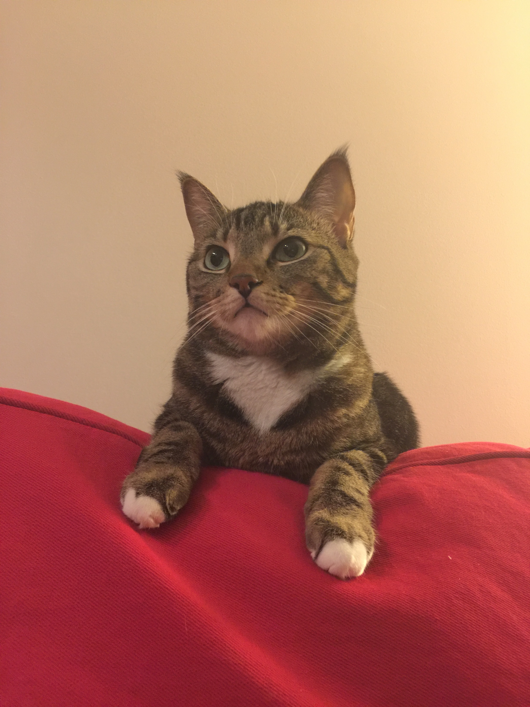

Unlike other cats, Dexter is very social. He is very good friends with cats and humans alike. But his closest friends are:
His foster sister. She is known as "Boss Ruby" and likes to supervise Dexter's work.
His cousin from South America. He arrived to Canada and Dexter has helped him to adjust to his new life.